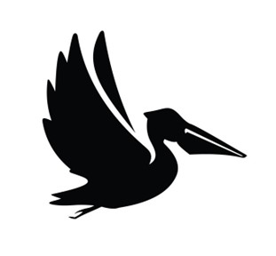

Peli-Tracking
📲 Installer
👉 Pointer arrivée
👋 Pointer départ
Date :
Heure d’arrivée :
Heure de départ :
Enregistrer
📊 Historique de la semaine
📅 Historique du mois
Mois :
🗓️ Historique de l’année
📤 Exporter CSV
🔧 Diagnostic PWA
Chargement…
♻️ Réinitialiser le cache PWA (sans effacer mes heures)